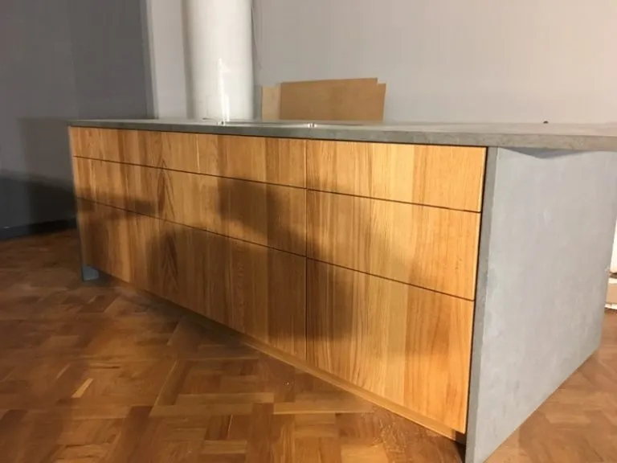
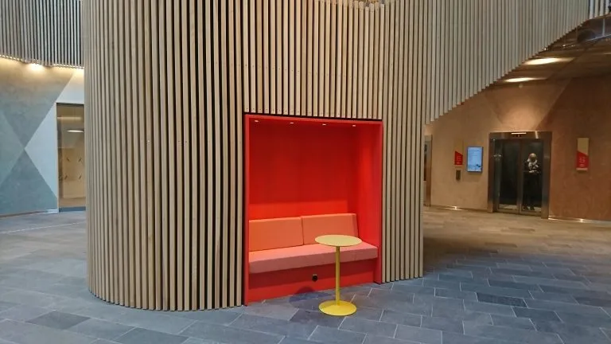
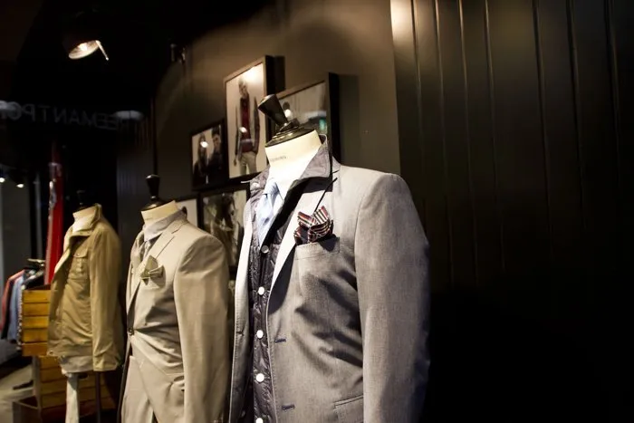
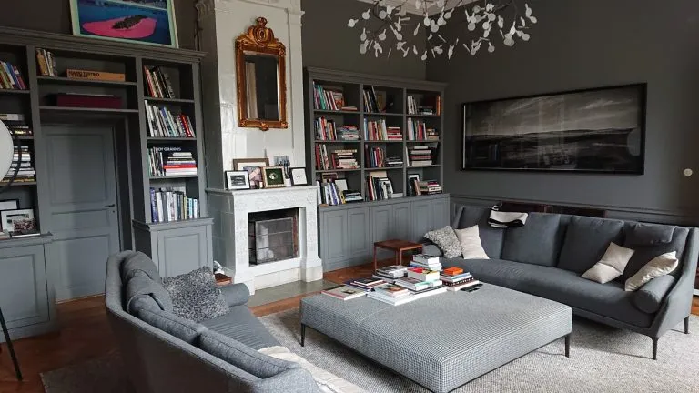
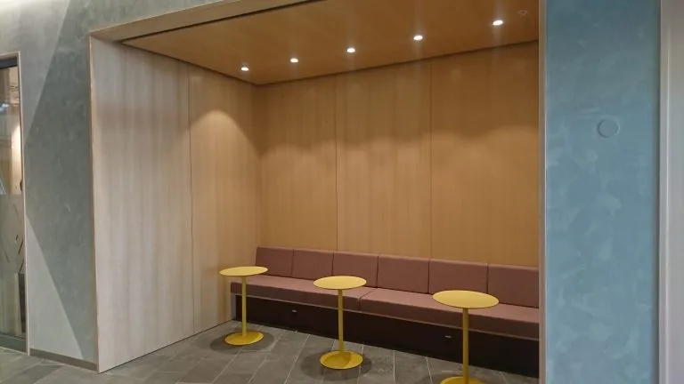
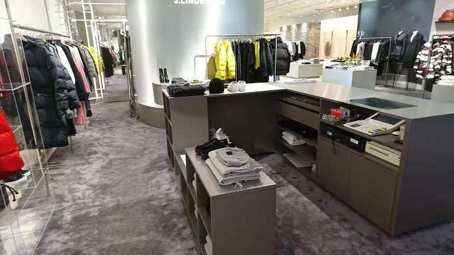
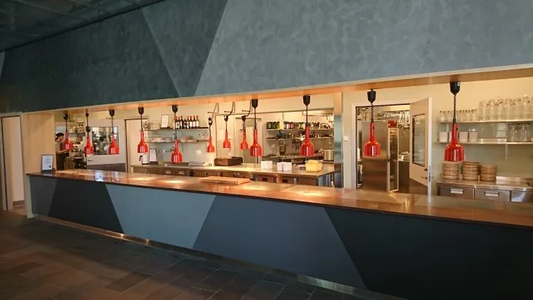
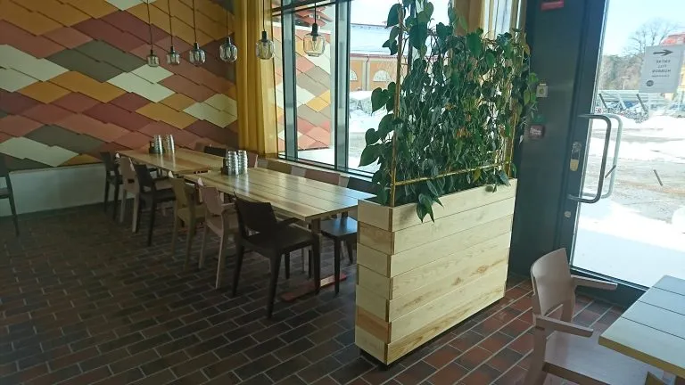
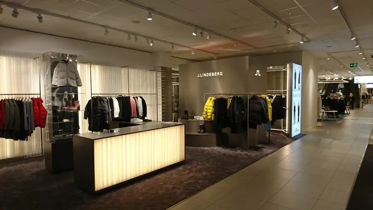

Referensprojekt inom finsnickeri
Kvalitet i
verkligheten.
Ett urval specialbyggda kök, möbler, butiksinredningar och offentliga miljöer. Varje projekt utvecklas efter plats, funktion och material.
Kontakta Jensens Finsnickerier i Gävle för mer information.








